TikTok: por dónde arrancamos
Lo que ya sabemos, y no es poco
Rosaholics ya invirtió en TikTok en 2026. No hace falta adivinar: hay datos.
| Invertido | $5.169 |
| Compras | 194 |
| Facturación | $23.786 |
| Costo por compra | $27 |
Ahora el matiz que cambia todo, y que apareció al abrir esos números por fecha:
| Período | Días | Inversión | Compras | ROAS |
|---|---|---|---|---|
| San Valentín (5 al 12 feb) | 8 | $3.224 | 180 | 6,72x |
| Marzo y abril | 15 | $1.945 | 14 | 1,09x |
El 93% de las ventas ocurrió en ocho días. Fuera de San Valentín, el costo por compra fue de $139 contra un máximo tolerable de $47.
Eso explica por qué se apagó en abril, y fue la decisión correcta.
La conclusión honesta: TikTok le funciona a Rosaholics cuando hay demanda estacional. Todavía no demostró que funcione el resto del año. Eso es exactamente lo que venimos a resolver, y tenemos cuatro meses para hacerlo antes de San Valentín 2027.
¿Sirven las fotos en TikTok? No. Y lo probamos con plata propia
| Formato | Inversión | CTR | CPC | Clicks | Compras |
|---|---|---|---|---|---|
| Foto y carrusel | $573 | 3,83% | $0,08 | 6.918 | 0 |
| Video | $3.615 | 0,39% | $1,52 | 2.384 | 169 |
Las fotos compraron casi tres veces más clicks a un veinteavo del precio, con un CTR diez veces mejor, y vendieron cero.
Es la trampa clásica de TikTok: el formato estático gana la atención de gente que estaba scrolleando, no de gente que quería comprar rosas. Todo el presupuesto va a video.
Lo que dice el mercado
Los cuatro videos que más rinden en flores en TikTok hoy. Están linkeados: se pueden abrir en la reunión y verlos.
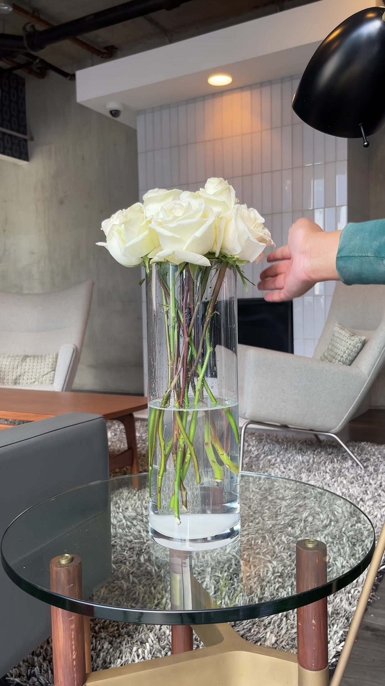
582.400 likes "How to Make Your flowers Last 🤍" @angeline.eeya · Cuidado y duración. El formato número uno de la categoría. Responde el miedo que frena la compra online: que lleguen mustias.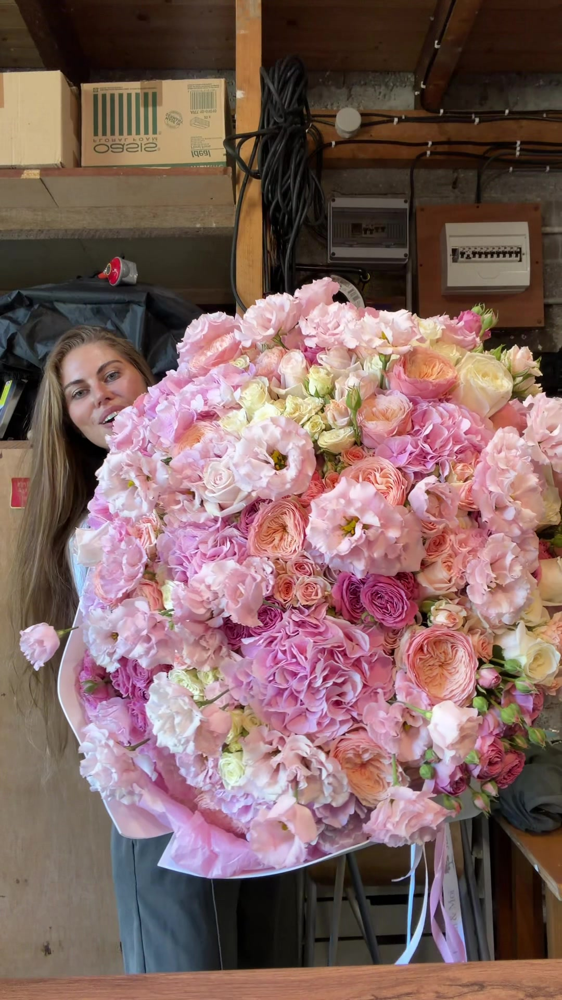
553.100 likes "Flower delivery in Paris " Florist in Paris · La entrega como momento estético. Sin guion, sin producción: una persona con un ramo enorme. El producto es el gancho.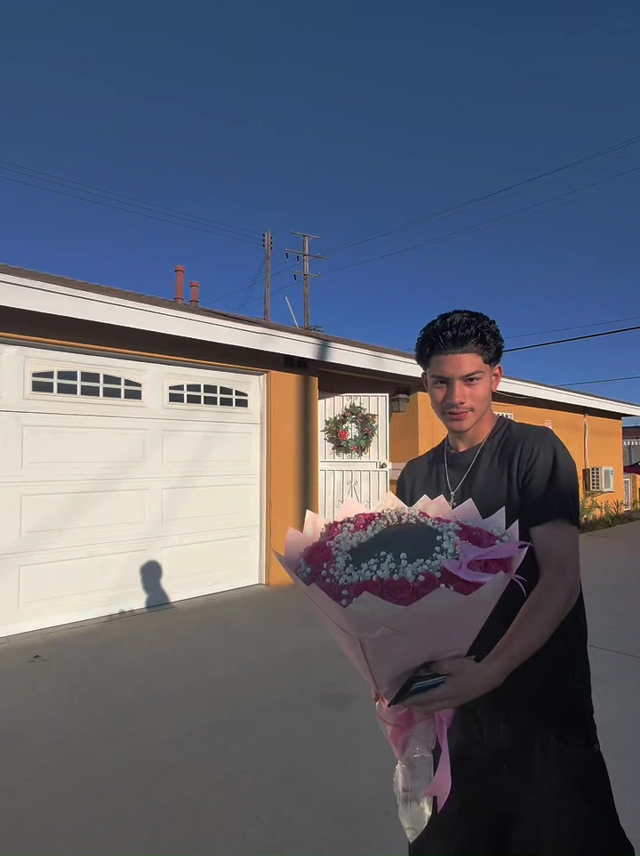
361.800 likes "How much would you guys pay for this?" @flowersbysarai · Revelación de precio. La pregunta hace que los comentarios trabajen solos, y los comentarios son el motor de distribución de TikTok.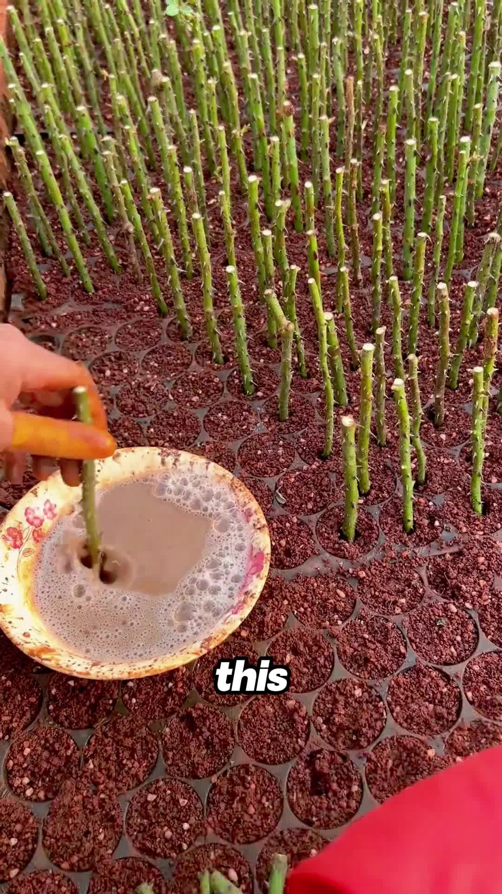
220.600 likes "How One Grower Scales Roses Like a Business" Tales Unveiled · Detrás de escena del productor. Contenido sobre la cadena de suministro, y rinde. Es el formato que Rosaholics puede hacer mejor que nadie.Lo que tienen en común: ninguno es un anuncio. Ninguno tiene producción cara. Dos de los cuatro son sobre de dónde vienen las flores y cuánto duran, que es exactamente donde Rosaholics tiene algo que contar.
Y el tamaño de cada uno en TikTok:
| Seguidores | Likes | |
|---|---|---|
| UrbanStems | 26.200 | 2.400.000 |
| 1-800-Flowers | 13.100 | 428.600 |
| The Bouqs | sin cuenta | |
| Rosaholics | 1.657 | 1.988 |
El ángulo que nadie nos puede copiar
Dos de los cuatro formatos ganadores son sobre de dónde vienen las flores y cuánto duran.
UrbanStems y 1-800-Flowers son distribuidores: compran, almacenan, despachan. Rosaholics es farm-direct desde Ecuador.
No es que ellos no puedan decirlo. Es que no pueden filmarlo. No tienen la finca, ni el corte, ni la caja armándose el mismo día en que se cortó el tallo.
Todos los demás te venden flores. Rosaholics te manda la finca.
Con qué lanzamos: ya tenemos los creativos
Once videos del historial que ya vendieron. Se relanzan sin producir nada nuevo. Están linkeados: se pueden abrir y ver en la reunión.
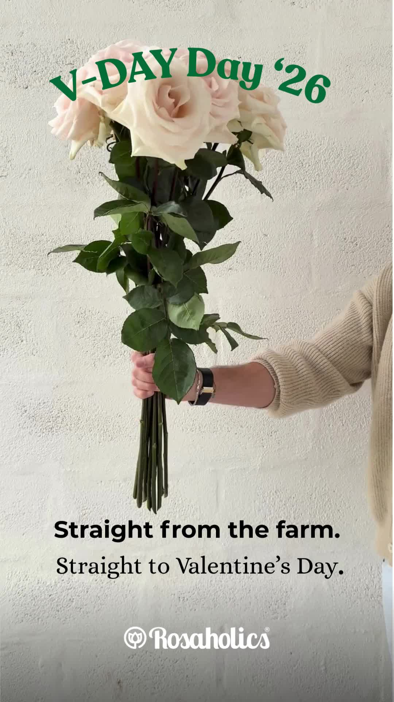
36 compras · 6.15x 1080x1920 - VDAY-2_OolGVBHD.mp4 $666 invertidos · 7s. Segundo en volumen. Formato vertical nativo.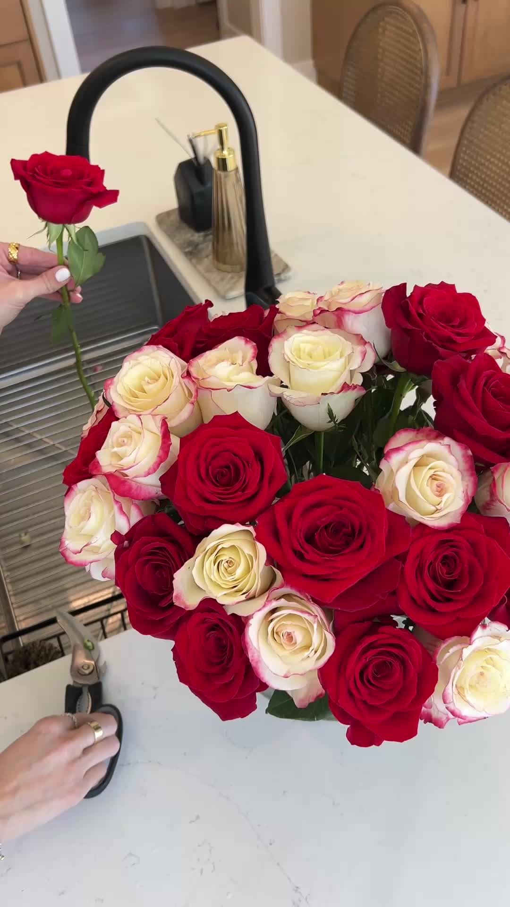
15 compras · 5.68x VD Promotional 2025_Jaclyn Ram_v2_diCj $309 invertidos · 18s. Creadora con nombre. Testimonial.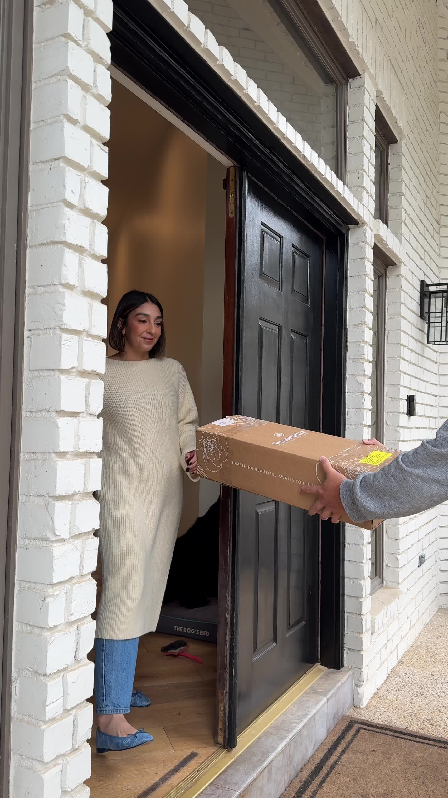
14 compras · 8.67x VD Promotional 2025_Adriana Alvarez_V2 $194 invertidos · 21s. La mejor eficiencia con volumen real.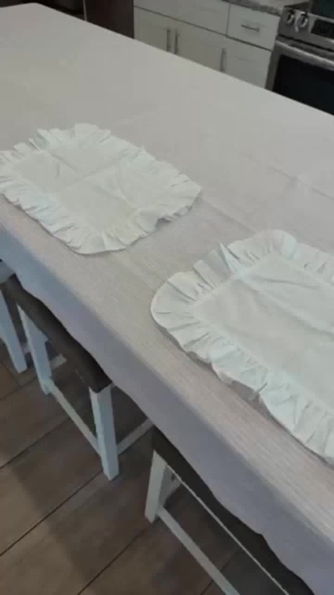
11 compras · 14.93x _001 $115 invertidos · 16s. 36% de retención a 2 segundos, la más alta del set. 8 compras · 21.10x ReelTammyMerecka_Iakfo3Cs.mp4 $45 invertidos · 16s. Gastó $45 y devolvió 21x. Nunca tuvo una prueba justa.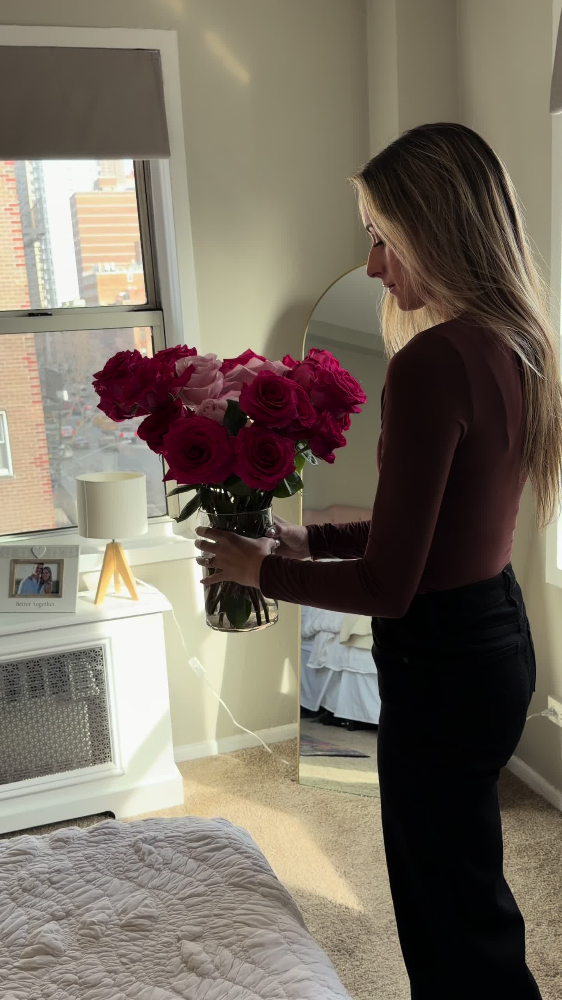
8 compras · 8.66x 02 Lauren $143 invertidos · 17s. El mejor CTR entre los que vendieron, 1,28%.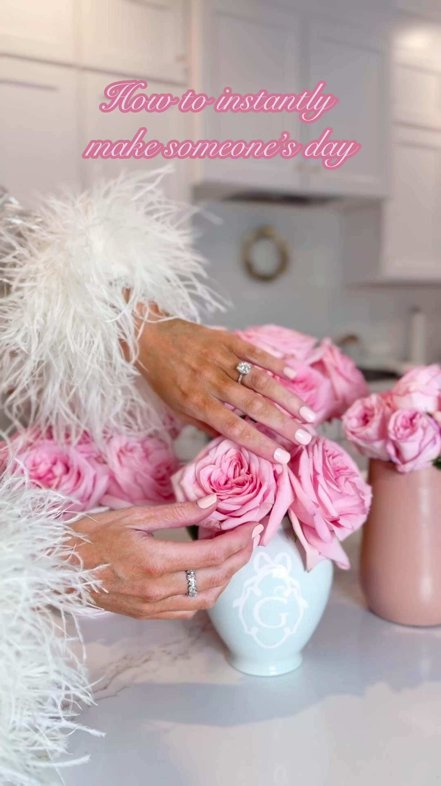
7 compras · 11.73x Testimonial 02 2025_Chelsea Adams_UE4R $65 invertidos · 28s. Gastó $65 y devolvió 11,7x. Sub-testeado.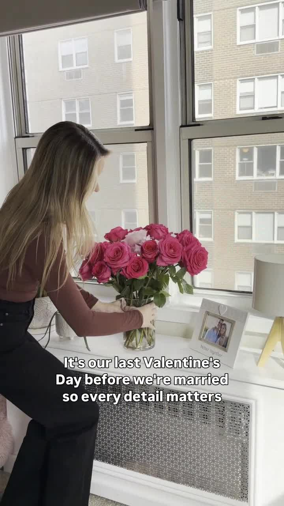
5 compras · 19.55x 7603773014370746369 $29 invertidos · 17s. Es una publicación orgánica: sirve para Spark Ads.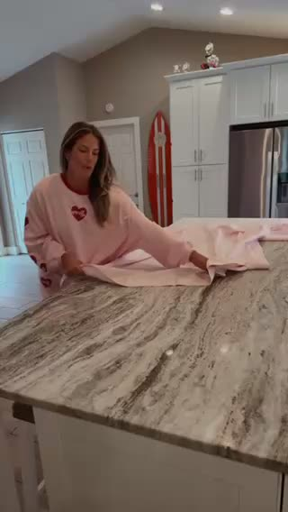
3 compras · 8.97x 03 Lauryn $70 invertidos · 16s. 26% de retención a 2 segundos.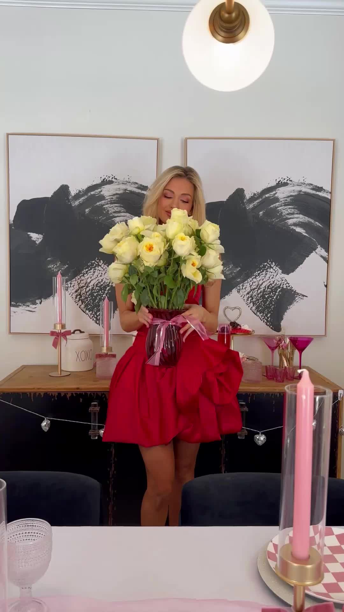
3 compras · 12.89x video (1)_c4JGktx7.mov $25 invertidos · 12s. Gastó $25 y devolvió 12,9x.Cuatro de ellos gastaron menos de $70 y devolvieron más de 8x. Nunca tuvieron una prueba justa. Esa es la victoria más barata disponible, y no cuesta producción.
El patrón detrás de todo esto: todos los videos con una persona real y con nombre vendieron. Todo lo genérico, estático o generado por IA vendió cero. Cuatro videos de IA: una sola compra entre todos.
Las seis ideas de contenido a testear
Tres se filman en la finca y son las que nadie puede copiar.
| # | Idea | Por qué |
|---|---|---|
| 1 | "Tu rosa todavía está en la tierra." El corte en Ecuador, con fecha, y la misma rosa llegando a una puerta. | El ángulo farm-direct, imposible de copiar |
| 2 | "Por qué las rosas del súper se mueren en cuatro días." | Educación con villano: la cadena de distribución |
| 3 | "Hacé esto apenas te lleguen." Video de cuidado real. | El formato N°1 de la categoría, 582.400 likes |
| 4 | "Día 1 contra Día 14." Time-lapse del mismo ramo. | Responde la objeción que frena la compra online |
| 5 | "¿Cuánto pagarías por esto?" 100 tallos, y que discutan en comentarios. | 361.800 likes al formato. Salen dos videos de una toma |
| 6 | 24 contra 50 contra 100, lado a lado. | El flete es 36% del costo y no sube con los tallos. Subir el ticket es lo que más margen deja |
Empezar hoy por la número 4, porque el time-lapse necesita dos semanas reales de rodaje.
El plan, en una línea por punto
| Cuándo | Qué |
|---|---|
| Semana 0 | Fondear la cuenta, prender Events API, y empezar a publicar en orgánico 4 veces por semana |
| Semanas 1 y 2 | $100/día, una campaña, los 11 videos probados. No tocar nada durante 14 días |
| Semanas 3 y 4 | Primera lectura contra el equilibrio de 3,14x |
| Semanas 5 a 8 | Sumar de a una: Spark Ads, retargeting, catálogo |
| Enero | Creativos cerrados, campañas al aire el 10, escalar desde el 20 |
El objetivo real de estos cuatro meses no es la facturación de septiembre a diciembre. Es llegar a enero con el pixel entrenado, los creativos probados y el costo por compra conocido, para pujar fuerte en San Valentín. Febrero factura diez veces junio: ahí se define el año.
Lo que necesitamos del equipo
| 1 | Fondear la cuenta. El saldo hoy es $0 |
| 2 | Material filmado en la finca. Es el activo más valioso de toda la lista |
| 3 | Alguien que publique 4 veces por semana. Sin orgánico no hay Spark Ads, que es el formato más fuerte de TikTok |
| 4 | Las cuatro creadoras que ya vendieron, rebriefeadas sobre el ángulo de la finca |
El detalle de cada punto está en el resto del hub: economía, lo que ya pasó, competencia, creativos, campañas, medición y pendientes.